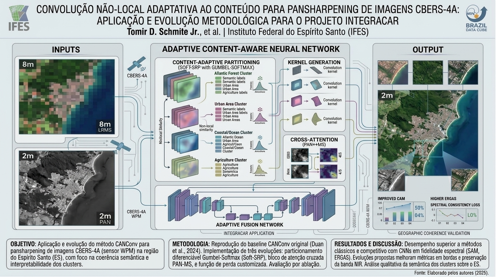

Convolução Não-Local Adaptativa ao Conteúdo para Pansharpening de Imagens
Uma das linhas de pesquisa do IntegraCAR investiga técnicas avançadas de fusão de imagens orbitais para ampliar a resolução espacial dos produtos multiespectrais utilizados no monitoramento territorial do Espírito Santo. A partir de imagens do satélite CBERS-4A, o projeto explora redes neurais capazes de identificar regiões semanticamente coerentes — como remanescentes de Mata Atlântica, áreas urbanas, litoral e zonas agrícolas — e de adaptar dinamicamente o processo de fusão a cada tipo de cobertura do solo. Essa abordagem permite gerar imagens de alta resolução espacial mais fiéis espectralmente, com potencial de aprimorar a precisão das análises que sustentam o Cadastro Ambiental Rural, favorecendo diagnósticos mais precisos sobre uso e ocupação do solo em todo o estado.

Trabalho relacionado
Convolução Não-Local Adaptativa ao Conteúdo para Pansharpening de Imagens CBERS-4A: Aplicação e Evolução Metodológica para o Projeto IntegraCAR
Resumo: Este trabalho propõe a aplicação e evolução do método CANConv (Content-Adaptive Non-Local Convolution) para a tarefa de pansharpening de imagens do satélite CBERS-4A, com foco na região do Espírito Santo. O CANConv emprega agrupamento para capturar a autosimilaridade não-local em imagens de sensoriamento remoto, gerando kernels de convolução adaptativos por meio de partição semântica. Propõem-se três contribuições metodológicas: particionamento diferenciável via Gumbel-Softmax (Soft-SRP), atenção cruzada PAN↔MS na geração de kernels e função de perda customizada para as características espectrais do WPM. A diversidade da cobertura do solo no Espírito Santo — mata atlântica, zonas urbanas, litoral e agricultura — oferece contexto geográfico rico para validar a coerência semântica dos clusters.
SCHMITE JUNIOR, T. D. Convolução Não-Adaptativa ao Conteúdo para Pansharpening de Imagens CBR-4A: Aplicação e Evolução Metodológica para o Projeto IntegraCAR. Trabalho apresentado em: SIMPÓSIO INTEGRACAR, 1., 2026, Vitória.